- After studying this chapter, you will be able to:
- Describe the major sections of the neurological exam
- Outline the benefits of rapidly assessing neurological function
- Relate anatomical structures of the nervous system to specific functions
- Diagram the connections of the nervous system to the musculature and integument involved in primary sensorimotor responses
- Compare and contrast the somatic and visceral reflexes with respect to how they are assessed through the neurological exam
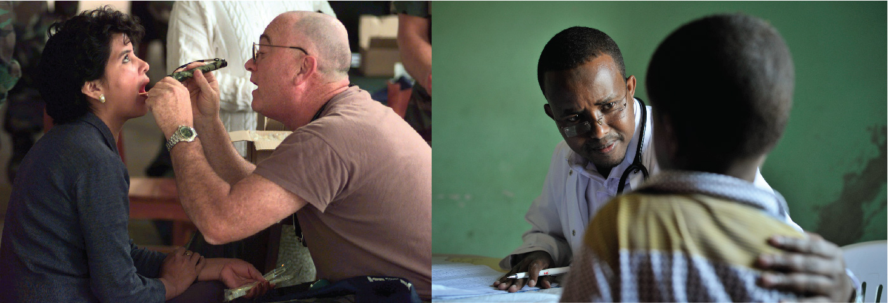
- List the major sections of the neurological exam
- Explain the connection between location and function in the nervous system
- Explain the benefit of a rapid assessment for neurological function in a clinical setting
- List the causes of neurological deficits
- Describe the different ischemic events in the nervous system
Theneurological examis a clinical assessment tool used to determine what specific parts of the CNS are affected by damage or disease. It can be performed in a short time—sometimes as quickly as 5 minutes—to establish neurological function. In the emergency department, this rapid assessment can make the difference with respect to proper treatment and the extent of recovery that is possible.
The exam is a series of subtests separated into five major sections. The first of these is themental status exam, which assesses the higher cognitive functions such as memory, orientation, and language. Then there is thecranial nerve exam, which tests the function of the 12 cranial nerves and, therefore, the central and peripheral structures associated with them. The cranial nerve exam tests the sensory and motor functions of each of the nerves, as applicable. Two major sections, thesensory examand themotor exam, test the sensory and motor functions associated with spinal nerves. Finally, thecoordination examtests the ability to perform complex and coordinated movements. Thegait exam, which is often considered a sixth major exam, specifically assesses the motor function of walking and can be considered part of the coordination exam because walking is a coordinated movement.
Localization of functionis the concept that circumscribed locations are responsible for specific functions. The neurological exam highlights this relationship. For example, the cognitive functions that are assessed in the mental status exam are based on functions in the cerebrum, mostly in the cerebral cortex. Several of the subtests examine language function. Deficits in neurological function uncovered by these examinations usually point to damage to the left cerebral cortex. In the majority of individuals, language function is localized to the left hemisphere between the superior temporal lobe and the posterior frontal lobe, including the intervening connections through the inferior parietal lobe.
The five major sections of the neurological exam are related to the major regions of the CNS (Figure \(\PageIndex{1}\)). The mental status exam assesses functions related to the cerebrum. The cranial nerve exam is for the nerves that connect to the diencephalon and brain stem (as well as the olfactory connections to the forebrain). The coordination exam and the related gait exam primarily assess the functions of the cerebellum. The motor and sensory exams are associated with the spinal cord and its connections through the spinal nerves.
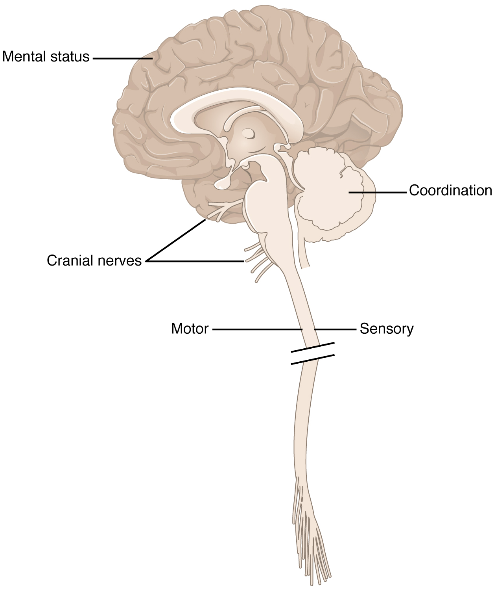
Part of the power of the neurological exam is this link between structure and function. Testing the various functions represented in the exam allows an accurate estimation of where the nervous system may be damaged. Consider the patient described in the chapter introduction. In the emergency department, he is given a quick exam to find where the deficit may be localized. Knowledge of where the damage occurred will lead to the most effective therapy.
In rapid succession, he is asked to smile, raise his eyebrows, stick out his tongue, and shrug his shoulders. The doctor tests muscular strength by providing resistance against his arms and legs while he tries to lift them. With his eyes closed, he has to indicate when he feels the tip of a pen touch his legs, arms, fingers, and face. He follows the tip of a pen as the doctor moves it through the visual field and finally toward his face. A formal mental status exam is not needed at this point; the patient will demonstrate any possible deficits in that area during normal interactions with the interviewer. If cognitive or language deficits are apparent, the interviewer can pursue mental status in more depth. All of this takes place in less than 5 minutes. The patient reports that he feels pins and needles in his left arm and leg, and has trouble feeling the tip of the pen when he is touched on those limbs. This suggests a problem with the sensory systems between the spinal cord and the brain. The emergency department has a lead to follow before a CT scan is performed. He is put on aspirin therapy to limit the possibility of blood clots forming, in case the cause is anembolus—an obstruction such as a blood clot that blocks the flow of blood in an artery or vein.
Watch this video to see a demonstration of the neurological exam—a series of tests that can be performed rapidly when a patient is initially brought into an emergency department. The exam can be repeated on a regular basis to keep a record of how and if neurological function changes over time. In what order were the sections of the neurological exam tested in this video, and which section seemed to be left out?
Damage to the nervous system can be limited to individual structures or can be distributed across broad areas of the brain and spinal cord. Localized, limited injury to the nervous system is most often the result of circulatory problems. Neurons are very sensitive to oxygen deprivation and will start to deteriorate within 1 or 2 minutes, and permanent damage (cell death) could result within a few hours. The loss of blood flow to part of the brain is known as astroke, or a cerebrovascular accident (CVA).
There are two main types of stroke, depending on how the blood supply is compromised: ischemic and hemorrhagic. Anischemic strokeis the loss of blood flow to an area because vessels are blocked or narrowed. This is often caused by an embolus, which may be a blood clot or fat deposit. Ischemia may also be the result of thickening of the blood vessel wall, or a drop in blood volume in the brain known ashypovolemia.
A related type of CVA is known as atransient ischemic attack (TIA), which is similar to a stroke although it does not last as long. The diagnostic definition of a stroke includes effects that last at least 24 hours. Any stroke symptoms that are resolved within a 24-hour period because of restoration of adequate blood flow are classified as a TIA.
Ahemorrhagic strokeis bleeding into the brain because of a damaged blood vessel. Accumulated blood fills a region of the cranial vault and presses against the tissue in the brain (Figure \(\PageIndex{2}\)). Physical pressure on the brain can cause the loss of function, as well as the squeezing of local arteries resulting in compromised blood flow beyond the site of the hemorrhage. As blood pools in the nervous tissue and the vasculature is damaged, the blood-brain barrier can break down and allow additional fluid to accumulate in the region, which is known asedema.
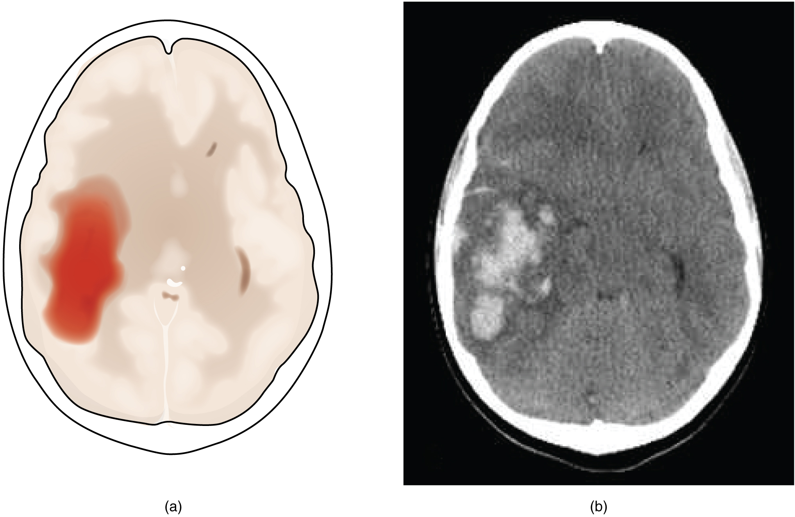
Whereas hemorrhagic stroke may involve bleeding into a large region of the CNS, such as into the deep white matter of a cerebral hemisphere, other events can cause widespread damage and loss of neurological functions. Infectious diseases can lead to loss of function throughout the CNS as components of nervous tissue, specifically astrocytes and microglia, react to the disease. Blunt force trauma, such as from a motor vehicle accident, can physically damage the CNS.
A class of disorders that affect the nervous system are the neurodegenerative diseases: Alzheimer’s disease, Parkinson’s disease, Huntington’s disease, amyotrophic lateral sclerosis (ALS), Creutzfeld–Jacob disease, multiple sclerosis (MS), and other disorders that are the result of nervous tissue degeneration. In diseases like Alzheimer’s, Parkinson’s, or ALS, neurons die; in diseases like MS, myelin is affected. Some of these disorders affect motor function, and others present with dementia. How patients with these disorders perform in the neurological exam varies, but is often broad in its effects, such as memory deficits that compromise many aspects of the mental status exam, or movement deficits that compromise aspects of the cranial nerve exam, the motor exam, or the coordination exam. The causes of these disorders are also varied. Some are the result of genetics, such as Huntington’s disease, or the result of autoimmunity, such as MS; others are not entirely understood, such as Alzheimer’s and Parkinson’s diseases. Current research suggests that many of these diseases are related in how the degeneration takes place and may be treated by common therapies.
Finally, a common cause of neurological changes is observed in developmental disorders. Whether the result of genetic factors or the environment during development, there are certain situations that result in neurological functions being different from the expected norms. Developmental disorders are difficult to define because they are caused by defects that existed in the past and disrupted the normal development of the CNS. These defects probably involve multiple environmental and genetic factors—most of the time, we don’t know what the cause is other than that it is more complex than just one factor. Furthermore, each defect on its own may not be a problem, but when several are added together, they can disrupt growth processes that are not well understand in the first place. For instance, it is possible for a stroke to damage a specific region of the brain and lead to the loss of the ability to recognize faces (prosopagnosia). The link between cell death in the fusiform gyrus and the symptom is relatively easy to understand. In contrast, similar deficits can be seen in children with the developmental disorder, autism spectrum disorder (ASD). However, these children do not lack a fusiform gyrus, nor is there any damage or defect visible to this brain region. We conclude, rather poorly, that this brain region is not connected properly to other brain regions.
Infection, trauma, and congenital disorders can all lead to significant signs, as identified through the neurological exam. It is important to differentiate between an acute event, such as stroke, and a chronic or global condition such as blunt force trauma. Responses seen in the neurological exam can help. A loss of language function observed in all its aspects is more likely a global event as opposed to a discrete loss of one function, such as not being able to say certain types of words. A concern, however, is that a specific function—such as controlling the muscles of speech—may mask other language functions. The various subtests within the mental status exam can address these finer points and help clarify the underlying cause of the neurological loss.
Watch this video for an introduction to the neurological exam. Studying the neurological exam can give insight into how structure and function in the nervous system are interdependent. This is a tool both in the clinic and in the classroom, but for different reasons. In the clinic, this is a powerful but simple tool to assess a patient’s neurological function. In the classroom, it is a different way to think about the nervous system. Though medical technology provides noninvasive imaging and real-time functional data, the presenter says these cannot replace the history at the core of the medical examination. What does history mean in the context of medical practice?
📖 OpenStax Anatomy & Physiology 2e, Section 16.2. openstax.org · CC BY 4.0
- Describe the relationship of mental status exam results to cerebral functions
- Explain the categorization of regions of the cortex based on anatomy and physiology
- Differentiate between primary, association, and integration areas of the cerebral cortex
- Provide examples of localization of function related to the cerebral cortex
In the clinical setting, the set of subtests known as the mental status exam helps us understand the relationship of the brain to the body. Ultimately, this is accomplished by assessing behavior. Tremors related to intentional movements, incoordination, or the neglect of one side of the body can be indicative of failures of the connections of the cerebrum either within the hemispheres, or from the cerebrum to other portions of the nervous system. There is no strict test for what the cerebrum does alone, but rather in what it does through its control of the rest of the CNS, the peripheral nervous system (PNS), and the musculature.
Sometimes eliciting a behavior is as simple as asking a question. Asking a patient to state their name is not only to verify that the file folder in a health care provider’s hands is the correct one, but also to be sure that the patient is aware, oriented, and capable of interacting with another person. If the answer to “What is your name?” is “Santa Claus,” the person may have a problem understanding reality. If the person just stares at the examiner with a confused look on their face, the person may have a problem understanding or producing speech.
The cerebrum is the seat of many of the higher mental functions, such as memory and learning, language, and conscious perception, which are the subjects of subtests of the mental status exam. The cerebral cortex is the thin layer of gray matter on the outside of the cerebrum. On average, it is approximately 2.55 mm thick and highly folded to fit within the limited space of the cranial vault. These higher functions are distributed across various regions of the cortex, and specific locations can be said to be responsible for particular functions. There is a limited set of regions, for example, that are involved in language function, and they can be subdivided on the basis of the particular part of language function that each governs.
The basis for parceling out areas of the cortex and attributing them to various functions has its root in pure anatomical underpinnings. The German neurologist and histologist Korbinian Brodmann, who made a careful study of thecytoarchitectureof the cerebrum around the turn of the nineteenth century, described approximately 50 regions of the cortex that differed enough from each other to be considered separate areas (Figure \(\PageIndex{1}\)). Brodmann made preparations of many different regions of the cerebral cortex to view with a microscope. He compared the size, shape, and number of neurons to find anatomical differences in the various parts of the cerebral cortex. Continued investigation into these anatomical areas over the subsequent 100 or more years has demonstrated a strong correlation between the structures and the functions attributed to those structures. For example, the first three areas in Brodmann’s list—which are in the postcentral gyrus—compose the primary somatosensory cortex. Within this area, finer separation can be made on the basis of the concept of the sensory homunculus, as well as the different submodalities of somatosensation such as touch, vibration, pain, temperature, or proprioception. Today, we more frequently refer to these regions by their function (i.e., primary sensory cortex) than by the number Brodmann assigned to them, but in some situations the use of Brodmann numbers persists.
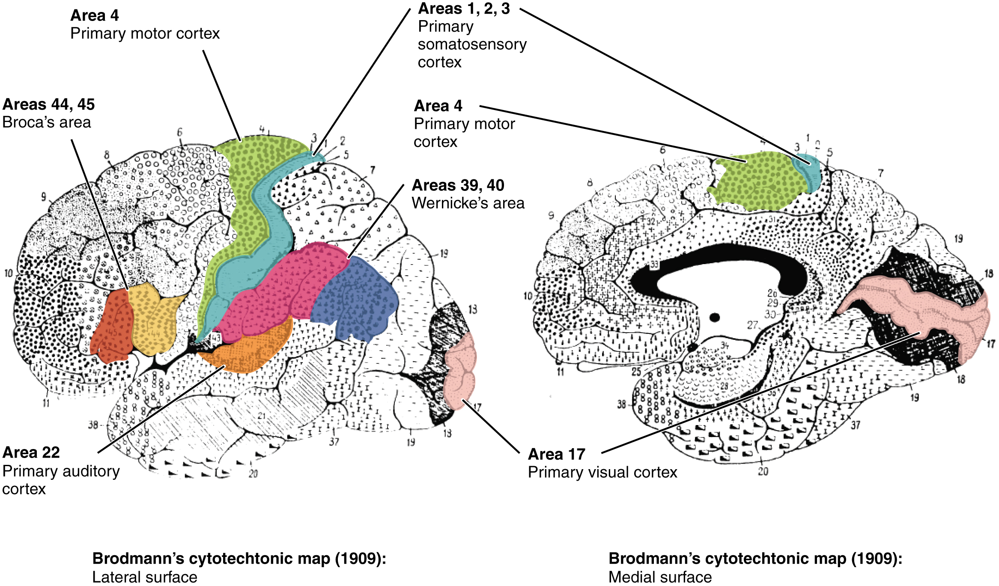
Area 17, as Brodmann described it, is also known as the primary visual cortex. Adjacent to that are areas 18 and 19, which constitute subsequent regions of visual processing. Area 22 is the primary auditory cortex, and it is followed by area 23, which further processes auditory information. Area 4 is the primary motor cortex in the precentral gyrus, whereas area 6 is the premotor cortex. These areas suggest some specialization within the cortex for functional processing, both in sensory and motor regions. The fact that Brodmann’s areas correlate so closely to functional localization in the cerebral cortex demonstrates the strong link between structure and function in these regions.
Areas 1, 2, 3, 4, 17, and 22 are each described as primary cortical areas. The adjoining regions are each referred to as association areas. Primary areas are where sensory information is initially received from the thalamus for conscious perception, or—in the case of the primary motor cortex—where descending commands are sent down to the brain stem or spinal cord to execute movements (Figure \(\PageIndex{2}\)).
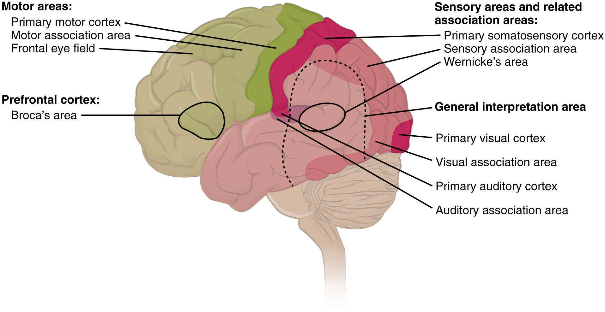
A number of other regions, which extend beyond these primary or association areas of the cortex, are referred to as integrative areas. These areas are found in the spaces between the domains for particular sensory or motor functions, and they integrate multisensory information, or process sensory or motor information in more complex ways. Consider, for example, the posterior parietal cortex that lies between the somatosensory cortex and visual cortex regions. This has been ascribed to the coordination of visual and motor functions, such as reaching to pick up a glass. The somatosensory function that would be part of this is the proprioceptive feedback from moving the arm and hand. The weight of the glass, based on what it contains, will influence how those movements are executed.
Assessment of cerebral functions is directed at cognitive abilities. The abilities assessed through the mental status exam can be separated into four groups: orientation and memory, language and speech, sensorium, and judgment and abstract reasoning.
#### Orientation and Memory
Orientation is the patient’s awareness of their immediate circumstances. It is awareness of time, not in terms of the clock, but of the date and what is occurring around the patient. It is awareness of place, such that a patient should know where they are and why. It is also awareness of who the patient is—recognizing personal identity and being able to relate that to the examiner. The initial tests of orientation are based on the questions, “Do you know what the date is?” or “Do you know where you are?” or “What is your name?” Further understanding of a patient’s awareness of orientation can come from questions that address remote memory, such as “Who is the President of the United States?”, or asking what happened on a specific date.
There are also specific tasks to address memory. One is the three-word recall test. The patient is given three words to recall, such as book, clock, and shovel. After a short interval, during which other parts of the interview continue, the patient is asked to recall the three words. Other tasks that assess memory—aside from those related to orientation—have the patient recite the months of the year in reverse order to avoid the overlearned sequence and focus on the memory of the months in an order, or to spell common words backwards, or to recite a list of numbers back.
Memory is largely a function of the temporal lobe, along with structures beneath the cerebral cortex such as the hippocampus and the amygdala. The storage of memory requires these structures of the medial temporal lobe. A famous case of a man who had both medial temporal lobes removed to treat intractable epilepsy provided insight into the relationship between the structures of the brain and the function of memory.
Henry Molaison, who was referred to as patient HM when he was alive, had epilepsy localized to both of his medial temporal lobes. In 1953, a bilateral lobectomy was performed that alleviated the epilepsy but resulted in the inability for HM to form new memories—a condition calledanterograde amnesia. HM was able to recall most events from before his surgery, although there was a partial loss of earlier memories, which is referred to asretrograde amnesia. HM became the subject of extensive studies into how memory works. What he was unable to do was form new memories of what happened to him, what are now calledepisodic memory. Episodic memory is autobiographical in nature, such as remembering riding a bicycle as a child around the neighborhood, as opposed to theprocedural memoryof how to ride a bike. HM also retained hisshort-term memory, such as what is tested by the three-word task described above. After a brief period, those memories would dissipate or decay and not be stored in the long-term because the medial temporal lobe structures were removed.
The difference in short-term, procedural, and episodic memory, as evidenced by patient HM, suggests that there are different parts of the brain responsible for those functions. The long-term storage of episodic memory requires the hippocampus and related medial temporal structures, and the location of those memories is in the multimodal integration areas of the cerebral cortex. However, short-term memory—also called working or active memory—is localized to the prefrontal lobe. Because patient HM had only lost his medial temporal lobe—and lost very little of his previous memories, and did not lose the ability to form new short-term memories—it was concluded that the function of the hippocampus, and adjacent structures in the medial temporal lobe, is to move (or consolidate) short-term memories (in the pre-frontal lobe) to long-term memory (in the temporal lobe).
The prefrontal cortex can also be tested for the ability to organize information. In one subtest of the mental status exam called set generation, the patient is asked to generate a list of words that all start with the same letter, but not to include proper nouns or names. The expectation is that a person can generate such a list of at least 10 words within 1 minute. Many people can likely do this much more quickly, but the standard separates the accepted normal from those with compromised prefrontal cortices.
Read this articleto learn about a young man who texts his fiancée in a panic as he finds that he is having trouble remembering things. At the hospital, a neurologist administers the mental status exam, which is mostly normal except for the three-word recall test. The young man could not recall them even 30 seconds after hearing them and repeating them back to the doctor. An undiscovered mass in the mediastinum region was found to be Hodgkin’s lymphoma, a type of cancer that affects the immune system and likely caused antibodies to attack the nervous system. The patient eventually regained his ability to remember, though the events in the hospital were always elusive. Considering that the effects on memory were temporary, but resulted in the loss of the specific events of the hospital stay, what regions of the brain were likely to have been affected by the antibodies and what type of memory does that represent?
#### Language and Speech
Language is, arguably, a very human aspect of neurological function. There are certainly strides being made in understanding communication in other species, but much of what makes the human experience seemingly unique is its basis in language. Any understanding of our species is necessarily reflective, as suggested by the question “What am I?” And the fundamental answer to this question is suggested by the famous quote by René Descartes: “Cogito Ergo Sum” (translated from Latin as “I think, therefore I am”). Formulating an understanding of yourself is largely describing who you are to yourself. It is a confusing topic to delve into, but language is certainly at the core of what it means to be self-aware.
The neurological exam has two specific subtests that address language. One measures the ability of the patient to understand language by asking them to follow a set of instructions to perform an action, such as “touch your right finger to your left elbow and then to your right knee.” Another subtest assesses the fluency and coherency of language by having the patient generate descriptions of objects or scenes depicted in drawings, and by reciting sentences or explaining a written passage. Language, however, is important in so many ways in the neurological exam. The patient needs to know what to do, whether it is as simple as explaining how the knee-jerk reflex is going to be performed, or asking a question such as “What is your name?” Often, language deficits can be determined without specific subtests; if a person cannot reply to a question properly, there may be a problem with the reception of language.
An important example of multimodal integrative areas is associated with language function (Figure \(\PageIndex{3}\)). Adjacent to the auditory association cortex, at the end of the lateral sulcus just anterior to the visual cortex, isWernicke’s area. In the lateral aspect of the frontal lobe, just anterior to the region of the motor cortex associated with the head and neck, is Broca’s area. Both regions were originally described on the basis of losses of speech and language, which is calledaphasia. The aphasia associated with Broca’s area is known as anexpressive aphasia, which means that speech production is compromised. This type of aphasia is often described as non-fluency because the ability to say some words leads to broken or halting speech. Grammar can also appear to be lost. The aphasia associated with Wernicke’s area is known as areceptive aphasia, which is not a loss of speech production, but a loss of understanding of content. Patients, after recovering from acute forms of this aphasia, report not being able to understand what is said to them or what they are saying themselves, but they often cannot keep from talking.
The two regions are connected by white matter tracts that run between the posterior temporal lobe and the lateral aspect of the frontal lobe.Conduction aphasiaassociated with damage to this connection refers to the problem of connecting the understanding of language to the production of speech. This is a very rare condition, but is likely to present as an inability to faithfully repeat spoken language.
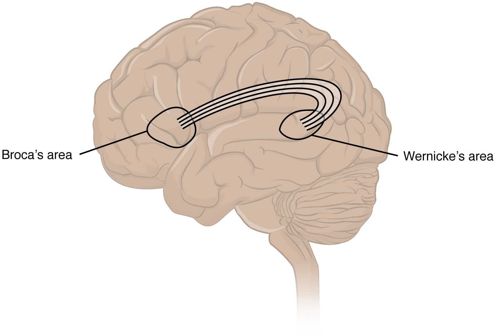
Those parts of the brain involved in the reception and interpretation of sensory stimuli are referred to collectively as the sensorium. The cerebral cortex has several regions that are necessary for sensory perception. From the primary cortical areas of the somatosensory, visual, auditory, and gustatory senses to the association areas that process information in these modalities, the cerebral cortex is the seat of conscious sensory perception. In contrast, sensory information can also be processed by deeper brain regions, which we may vaguely describe as subconscious—for instance, we are not constantly aware of the proprioceptive information that the cerebellum uses to maintain balance. Several of the subtests can reveal activity associated with these sensory modalities, such as being able to hear a question or see a picture. Two subtests assess specific functions of these cortical areas.
The first ispraxis, a practical exercise in which the patient performs a task completely on the basis of verbal description without any demonstration from the examiner. For example, the patient can be told to take their left hand and place it palm down on their left thigh, then flip it over so the palm is facing up, and then repeat this four times. The examiner describes the activity without any movements on their part to suggest how the movements are to be performed. The patient needs to understand the instructions, transform them into movements, and use sensory feedback, both visual and proprioceptive, to perform the movements correctly.
The second subtest for sensory perception isgnosis, which involves two tasks. The first task, known asstereognosis, involves the naming of objects strictly on the basis of the somatosensory information that comes from manipulating them. The patient keeps their eyes closed and is given a common object, such as a coin, that they have to identify. The patient should be able to indicate the particular type of coin, such as a dime versus a penny, or a nickel versus a quarter, on the basis of the sensory cues involved. For example, the size, thickness, or weight of the coin may be an indication, or to differentiate the pairs of coins suggested here, the smooth or corrugated edge of the coin will correspond to the particular denomination. The second task,graphesthesia, is to recognize numbers or letters written on the palm of the hand with a dull pointer, such as a pen cap.
Praxis and gnosis are related to the conscious perception and cortical processing of sensory information. Being able to transform verbal commands into a sequence of motor responses, or to manipulate and recognize a common object and associate it with a name for that object. Both subtests have language components because language function is integral to these functions. The relationship between the words that describe actions, or the nouns that represent objects, and the cerebral location of these concepts is suggested to be localized to particular cortical areas. Certain aphasias can be characterized by a deficit of verbs or nouns, known as V impairment or N impairment, or may be classified as V–N dissociation. Patients have difficulty using one type of word over the other. To describe what is happening in a photograph as part of the expressive language subtest, a patient will use active- or image-based language. The lack of one or the other of these components of language can relate to the ability to use verbs or nouns. Damage to the region at which the frontal and temporal lobes meet, including the region known as the insula, is associated with V impairment; damage to the middle and inferior temporal lobe is associated with N impairment.
#### Judgment and Abstract Reasoning
Planning and producing responses requires an ability to make sense of the world around us. Making judgments and reasoning in the abstract are necessary to produce movements as part of larger responses. For example, when your alarm goes off, do you hit the snooze button or jump out of bed? Is 10 extra minutes in bed worth the extra rush to get ready for your day? Will hitting the snooze button multiple times lead to feeling more rested or result in a panic as you run late? How you mentally process these questions can affect your whole day.
The prefrontal cortex is responsible for the functions responsible for planning and making decisions. In the mental status exam, the subtest that assesses judgment and reasoning is directed at three aspects of frontal lobe function. First, the examiner asks questions about problem solving, such as “If you see a house on fire, what would you do?” The patient is also asked to interpret common proverbs, such as “Don’t look a gift horse in the mouth.” Additionally, pairs of words are compared for similarities, such as apple and orange, or lamp and cabinet.
The prefrontal cortex is composed of the regions of the frontal lobe that are not directly related to specific motor functions. The most posterior region of the frontal lobe, the precentral gyrus, is the primary motor cortex. Anterior to that are the premotor cortex, Broca’s area, and the frontal eye fields, which are all related to planning certain types of movements. Anterior to what could be described as motor association areas are the regions of the prefrontal cortex. They are the regions in which judgment, abstract reasoning, and working memory are localized. The antecedents to planning certain movements are judging whether those movements should be made, as in the example of deciding whether to hit the snooze button.
To an extent, the prefrontal cortex may be related to personality. The neurological exam does not necessarily assess personality, but it can be within the realm of neurology or psychiatry. A clinical situation that suggests this link between the prefrontal cortex and personality comes from the story of Phineas Gage, the railroad worker from the mid-1800s who had a metal spike impale his prefrontal cortex. There are suggestions that the steel rod led to changes in his personality. A man who was a quiet, dependable railroad worker became a raucous, irritable drunkard. Later anecdotal evidence from his life suggests that he was able to support himself, although he had to relocate and take on a different career as a stagecoach driver.
A psychiatric practice to deal with various disorders was the prefrontal lobotomy. This procedure was common in the 1940s and early 1950s, until antipsychotic drugs became available. The connections between the prefrontal cortex and other regions of the brain were severed. The disorders associated with this procedure included some aspects of what are now referred to as personality disorders, but also included mood disorders and psychoses. Depictions of lobotomies in popular media suggest a link between cutting the white matter of the prefrontal cortex and changes in a patient’s mood and personality, though this correlation is not well understood.
#### Left Brain, Right Brain
Popular media often refer to right-brained and left-brained people, as if the brain were two independent halves that work differently for different people. This is a popular misinterpretation of an important neurological phenomenon. As an extreme measure to deal with a debilitating condition, the corpus callosum may be sectioned to overcome intractable epilepsy. When the connections between the two cerebral hemispheres are cut, interesting effects can be observed.
If a person with an intact corpus callosum is asked to put their hands in their pockets and describe what is there on the basis of what their hands feel, they might say that they have keys in their right pocket and loose change in the left. They may even be able to count the coins in their pocket and say if they can afford to buy a candy bar from the vending machine. If a person with a sectioned corpus callosum is given the same instructions, they will do something quite peculiar. They will only put their right hand in their pocket and say they have keys there. They will not even move their left hand, much less report that there is loose change in the left pocket.
The reason for this is that the language functions of the cerebral cortex are localized to the left hemisphere in 95 percent of the population. Additionally, the left hemisphere is connected to the right side of the body through the corticospinal tract and the ascending tracts of the spinal cord. Motor commands from the precentral gyrus control the opposite side of the body, whereas sensory information processed by the postcentral gyrus is received from the opposite side of the body. For a verbal command to initiate movement of the right arm and hand, the left side of the brain needs to be connected by the corpus callosum. Language is processed in the left side of the brain and directly influences the left brain and right arm motor functions, but is sent to influence the right brain and left arm motor functions through the corpus callosum. Likewise, the left-handed sensory perception of what is in the left pocket travels across the corpus callosum from the right brain, so no verbal report on those contents would be possible if the hand happened to be in the pocket.
Watch the video titled “The Man With Two Brains” to see the neuroscientist Michael Gazzaniga introduce a patient he has worked with for years who has had his corpus callosum cut, separating his two cerebral hemispheres. A few tests are run to demonstrate how this manifests in tests of cerebral function. Unlike normal people, this patient can perform two independent tasks at the same time because the lines of communication between the right and left sides of his brain have been removed. Whereas a person with an intact corpus callosum cannot overcome the dominance of one hemisphere over the other, this patient can. If the left cerebral hemisphere is dominant in the majority of people, why would right-handedness be most common?
📖 OpenStax Anatomy & Physiology 2e, Section 16.3. openstax.org · CC BY 4.0
- Describe the functional grouping of cranial nerves
- Match the regions of the forebrain and brain stem that are connected to each cranial nerve
- Suggest diagnoses that would explain certain losses of function in the cranial nerves
- Relate cranial nerve deficits to damage of adjacent, unrelated structures
The twelve cranial nerves are typically covered in introductory anatomy courses, and memorizing their names is facilitated by numerous mnemonics developed by students over the years of this practice. But knowing the names of the nerves in order often leaves much to be desired in understanding what the nerves do. The nerves can be categorized by functions, and subtests of the cranial nerve exam can clarify these functional groupings.
Three of the nerves are strictly responsible for special senses whereas four others contain fibers for special and general senses. Three nerves are connected to the extraocular muscles resulting in the control of gaze. Four nerves connect to muscles of the face, oral cavity, and pharynx, controlling facial expressions, mastication, swallowing, and speech. Four nerves make up the cranial component of the parasympathetic nervous system responsible for pupillary constriction, salivation, and the regulation of the organs of the thoracic and upper abdominal cavities. Finally, one nerve controls the muscles of the neck, assisting with spinal control of the movement of the head and neck.
The cranial nerve exam allows directed tests of forebrain and brain stem structures. The twelve cranial nerves serve the head and neck. The vagus nerve (cranial nerve X) has autonomic functions in the thoracic and superior abdominal cavities. The special senses are served through the cranial nerves, as well as the general senses of the head and neck. The movement of the eyes, face, tongue, throat, and neck are all under the control of cranial nerves. Preganglionic parasympathetic nerve fibers that control pupillary size, salivary glands, and the thoracic and upper abdominal viscera are found in four of the nerves. Tests of these functions can provide insight into damage to specific regions of the brain stem and may uncover deficits in adjacent regions.
The olfactory, optic, and vestibulocochlear nerves (cranial nerves I, II, and VIII) are dedicated to four of the special senses: smell, vision, equilibrium, and hearing, respectively. Taste sensation is relayed to the brain stem through fibers of the facial and glossopharyngeal nerves. The trigeminal nerve is a mixed nerve that carries the general somatic senses from the head, similar to those coming through spinal nerves from the rest of the body.
Testing smell is straightforward, as common smells are presented to one nostril at a time. The patient should be able to recognize the smell of coffee or mint, indicating the proper functioning of the olfactory system. Loss of the sense of smell is called anosmia and can be lost following blunt trauma to the head or through aging. The short axons of the first cranial nerve regenerate on a regular basis. The neurons in the olfactory epithelium have a limited life span, and new cells grow to replace the ones that die off. The axons from these neurons grow back into the CNS by following the existing axons—representing one of the few examples of such growth in the mature nervous system. If all of the fibers are sheared when the brain moves within the cranium, such as in a motor vehicle accident, then no axons can find their way back to the olfactory bulb to re-establish connections. If the nerve is not completely severed, the anosmia may be temporary as new neurons can eventually reconnect.
Olfaction is not the pre-eminent sense, but its loss can be quite detrimental. The enjoyment of food is largely based on our sense of smell. Anosmia means that food will not seem to have the same taste, though the gustatory sense is intact, and food will often be described as being bland. However, the taste of food can be improved by adding ingredients (e.g., salt) that stimulate the gustatory sense.
Testing vision relies on the tests that are common in an optometry office. TheSnellen chart(Figure \(\PageIndex{1}\)) demonstrates visual acuity by presenting standard Roman letters in a variety of sizes. The result of this test is a rough generalization of the acuity of a person based on the normal accepted acuity, such that a letter that subtends a visual angle of 5 minutes of an arc at 20 feet can be seen. To have 20/60 vision, for example, means that the smallest letters that a person can see at a 20-foot distance could be seen by a person with normal acuity from 60 feet away. Testing the extent of the visual field means that the examiner can establish the boundaries of peripheral vision as simply as holding their hands out to either side and asking the patient when the fingers are no longer visible without moving the eyes to track them. If it is necessary, further tests can establish the perceptions in the visual fields. Physical inspection of the optic disk, or where the optic nerve emerges from the eye, can be accomplished by looking through the pupil with an ophthalmoscope.
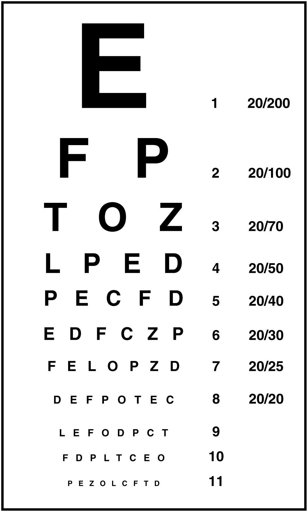
The optic nerves from both sides enter the cranium through the respective optic canals and meet at the optic chiasm at which fibers sort such that the two halves of the visual field are processed by the opposite sides of the brain. Deficits in visual field perception often suggest damage along the length of the optic pathway between the orbit and the diencephalon. For example, loss of peripheral vision may be the result of a pituitary tumor pressing on the optic chiasm (Figure \(\PageIndex{2}\)). The pituitary, seated in the sella turcica of the sphenoid bone, is directly inferior to the optic chiasm. The axons that decussate in the chiasm are from the medial retinae of either eye, and therefore carry information from the peripheral visual field.
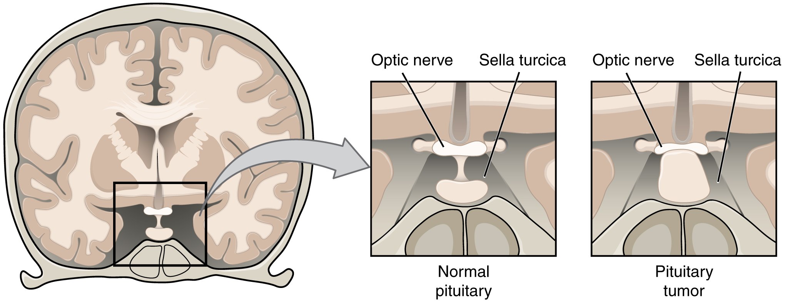
The vestibulocochlear nerve (CN VIII) carries both equilibrium and auditory sensations from the inner ear to the medulla. Though the two senses are not directly related, anatomy is mirrored in the two systems. Problems with balance, such as vertigo, and deficits in hearing may both point to problems with the inner ear. Within the petrous region of the temporal bone is the bony labyrinth of the inner ear. The vestibule is the portion for equilibrium, composed of the utricle, saccule, and the three semicircular canals. The cochlea is responsible for transducing sound waves into a neural signal. The sensory nerves from these two structures travel side-by-side as the vestibulocochlear nerve, though they are really separate divisions. They both emerge from the inner ear, pass through the internal auditory meatus, and synapse in nuclei of the superior medulla. Though they are part of distinct sensory systems, the vestibular nuclei and the cochlear nuclei are close neighbors with adjacent inputs. Deficits in one or both systems could occur from damage that encompasses structures close to both. Damage to structures near the two nuclei can result in deficits to one or both systems.
Balance or hearing deficits may be the result of damage to the middle or inner ear structures. Ménière's disease is a disorder that can affect both equilibrium and audition in a variety of ways. The patient can suffer from vertigo, a low-frequency ringing in the ears, or a loss of hearing. From patient to patient, the exact presentation of the disease can be different. Additionally, within a single patient, the symptoms and signs may change as the disease progresses. Use of the neurological exam subtests for the vestibulocochlear nerve illuminates the changes a patient may go through. The disease appears to be the result of accumulation, or over-production, of fluid in the inner ear, in either the vestibule or cochlea.
Tests of equilibrium are important for coordination and gait and are related to other aspects of the neurological exam. The vestibulo-ocular reflex involves the cranial nerves for gaze control. Balance and equilibrium, as tested by the Romberg test, are part of spinal and cerebellar processes and involved in those components of the neurological exam, as discussed later.
Hearing is tested by using a tuning fork in a couple of different ways. TheRinne testinvolves using a tuning fork to distinguish betweenconductive hearingandsensorineural hearing. Conductive hearing relies on vibrations being conducted through the ossicles of the middle ear. Sensorineural hearing is the transmission of sound stimuli through the neural components of the inner ear and cranial nerve. A vibrating tuning fork is placed on the mastoid process and the patient indicates when the sound produced from this is no longer present. Then the fork is immediately moved to just next to the ear canal so the sound travels through the air. If the sound is not heard through the ear, meaning the sound is conducted better through the temporal bone than through the ossicles, a conductive hearing deficit is present. TheWeber testalso uses a tuning fork to differentiate between conductive versus sensorineural hearing loss. In this test, the tuning fork is placed at the top of the skull, and the sound of the tuning fork reaches both inner ears by traveling through bone. In a healthy patient, the sound would appear equally loud in both ears. With unilateral conductive hearing loss, however, the tuning fork sounds louder in the ear with hearing loss. This is because the sound of the tuning fork has to compete with background noise coming from the outer ear, but in conductive hearing loss, the background noise is blocked in the damaged ear, allowing the tuning fork to sound relatively louder in that ear. With unilateral sensorineural hearing loss, however, damage to the cochlea or associated nervous tissue means that the tuning fork sounds quieter in that ear.
The trigeminal system of the head and neck is the equivalent of the ascending spinal cord systems of the dorsal column and the spinothalamic pathways. Somatosensation of the face is conveyed along the nerve to enter the brain stem at the level of the pons. Synapses of those axons, however, are distributed across nuclei found throughout the brain stem. The mesencephalic nucleus processes proprioceptive information of the face, which is the movement and position of facial muscles. It is the sensory component of thejaw-jerk reflex, a stretch reflex of the masseter muscle. The chief nucleus, located in the pons, receives information about light touch as well as proprioceptive information about the mandible, which are both relayed to the thalamus and, ultimately, to the postcentral gyrus of the parietal lobe. The spinal trigeminal nucleus, located in the medulla, receives information about crude touch, pain, and temperature to be relayed to the thalamus and cortex. Essentially, the projection through the chief nucleus is analogous to the dorsal column pathway for the body, and the projection through the spinal trigeminal nucleus is analogous to the spinothalamic pathway.
Subtests for the sensory component of the trigeminal system are the same as those for the sensory exam targeting the spinal nerves. The primary sensory subtest for the trigeminal system is sensory discrimination. A cotton-tipped applicator, which is cotton attached to the end of a thin wooden stick, can be used easily for this. The wood of the applicator can be snapped so that a pointed end is opposite the soft cotton-tipped end. The cotton end provides a touch stimulus, while the pointed end provides a painful, or sharp, stimulus. While the patient’s eyes are closed, the examiner touches the two ends of the applicator to the patient’s face, alternating randomly between them. The patient must identify whether the stimulus is sharp or dull. These stimuli are processed by the trigeminal system separately. Contact with the cotton tip of the applicator is a light touch, relayed by the chief nucleus, but contact with the pointed end of the applicator is a painful stimulus relayed by the spinal trigeminal nucleus. Failure to discriminate these stimuli can localize problems within the brain stem. If a patient cannot recognize a painful stimulus, that might indicate damage to the spinal trigeminal nucleus in the medulla. The medulla also contains important regions that regulate the cardiovascular, respiratory, and digestive systems, as well as being the pathway for ascending and descending tracts between the brain and spinal cord. Damage, such as a stroke, that results in changes in sensory discrimination may indicate these unrelated regions are affected as well.
The three nerves that control the extraocular muscles are the oculomotor, trochlear, and abducens nerves, which are the third, fourth, and sixth cranial nerves. As the name suggests, the abducens nerve is responsible for abducting the eye, which it controls through contraction of the lateral rectus muscle. The trochlear nerve controls the superior oblique muscle to rotate the eye along its axis in the orbit medially, which is calledintorsion, and is a component of focusing the eyes on an object close to the face. The oculomotor nerve controls all the other extraocular muscles, as well as a muscle of the upper eyelid. Movements of the two eyes need to be coordinated to locate and track visual stimuli accurately. When moving the eyes to locate an object in the horizontal plane, or to track movement horizontally in the visual field, the lateral rectus muscle of one eye and medial rectus muscle of the other eye are both active. The lateral rectus is controlled by neurons of the abducens nucleus in the superior medulla, whereas the medial rectus is controlled by neurons in the oculomotor nucleus of the midbrain.
Coordinated movement of both eyes through different nuclei requires integrated processing through the brain stem. In the midbrain, the superior colliculus integrates visual stimuli with motor responses to initiate eye movements. Theparamedian pontine reticular formation (PPRF)will initiate a rapid eye movement, orsaccade, to bring the eyes to bear on a visual stimulus quickly. These areas are connected to the oculomotor, trochlear, and abducens nuclei by themedial longitudinal fasciculus (MLF)that runs through the majority of the brain stem. The MLF allows forconjugate gaze, or the movement of the eyes in the same direction, during horizontal movements that require the lateral and medial rectus muscles. Control of conjugate gaze strictly in the vertical direction is contained within the oculomotor complex. To elevate the eyes, the oculomotor nerve on either side stimulates the contraction of both superior rectus muscles; to depress the eyes, the oculomotor nerve on either side stimulates the contraction of both inferior rectus muscles.
Purely vertical movements of the eyes are not very common. Movements are often at an angle, so some horizontal components are necessary, adding the medial and lateral rectus muscles to the movement. The rapid movement of the eyes used to locate and direct the fovea onto visual stimuli is called a saccade. Notice that the paths that are traced in Figure \(\PageIndex{3}\) are not strictly vertical. The movements between the nose and the mouth are closest, but still have a slant to them. Also, the superior and inferior rectus muscles are not perfectly oriented with the line of sight. The origin for both muscles is medial to their insertions, so elevation and depression may require the lateral rectus muscles to compensate for the slight adduction inherent in the contraction of those muscles, requiring MLF activity as well.
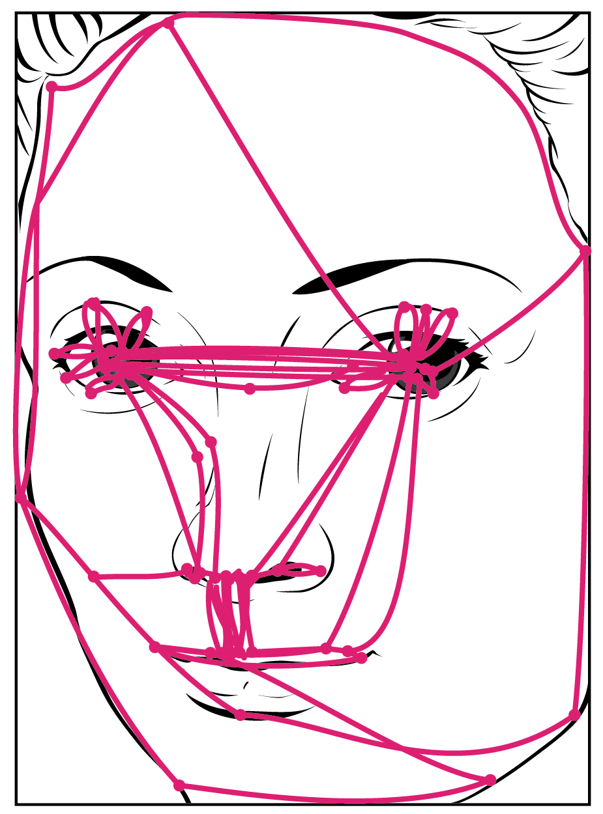
Testing eye movement is simply a matter of having the patient track the tip of a pen as it is passed through the visual field. This may appear similar to testing visual field deficits related to the optic nerve, but the difference is that the patient is asked to not move the eyes while the examiner moves a stimulus into the peripheral visual field. Here, the extent of movement is the point of the test. The examiner is watching for conjugate movements representing proper function of the related nuclei and the MLF. Failure of one eye to abduct while the other adducts in a horizontal movement is referred to asinternuclear ophthalmoplegia. When this occurs, the patient will experiencediplopia, or double vision, as the two eyes are temporarily pointed at different stimuli. Diplopia is not restricted to failure of the lateral rectus, because any of the extraocular muscles may fail to move one eye in perfect conjugation with the other.
The final aspect of testing eye movements is to move the tip of the pen in toward the patient’s face. As visual stimuli move closer to the face, the two medial recti muscles cause the eyes to move in the one nonconjugate movement that is part of gaze control. When the two eyes move to look at something closer to the face, they both adduct, which is referred to asconvergence. To keep the stimulus in focus, the eye also needs to change the shape of the lens, which is controlled through the parasympathetic fibers of the oculomotor nerve. The change in focal power of the eye is referred to asaccommodation. Accommodation ability changes with age; focusing on nearer objects, such as the written text of a book or on a computer screen, may require corrective lenses later in life. Coordination of the skeletal muscles for convergence and coordination of the smooth muscles of the ciliary body for accommodation are referred to as theaccommodation–convergence reflex.
A crucial function of the cranial nerves is to keep visual stimuli centered on the fovea of the retina. Thevestibulo-ocular reflex (VOR)coordinates all of the components (Figure \(\PageIndex{4}\)), both sensory and motor, that make this possible. If the head rotates in one direction—for example, to the right—the horizontal pair of semicircular canals in the inner ear indicate the movement by increased activity on the right and decreased activity on the left. The information is sent to the abducens nuclei and oculomotor nuclei on either side to coordinate the lateral and medial rectus muscles. The left lateral rectus and right medial rectus muscles will contract, rotating the eyes in the opposite direction of the head, while nuclei controlling the right lateral rectus and left medial rectus muscles will be inhibited to reduce antagonism of the contracting muscles. These actions stabilize the visual field by compensating for the head rotation with opposite rotation of the eyes in the orbits. Deficits in the VOR may be related to vestibular damage, such as in Ménière’s disease, or from dorsal brain stem damage that would affect the eye movement nuclei or their connections through the MLF.
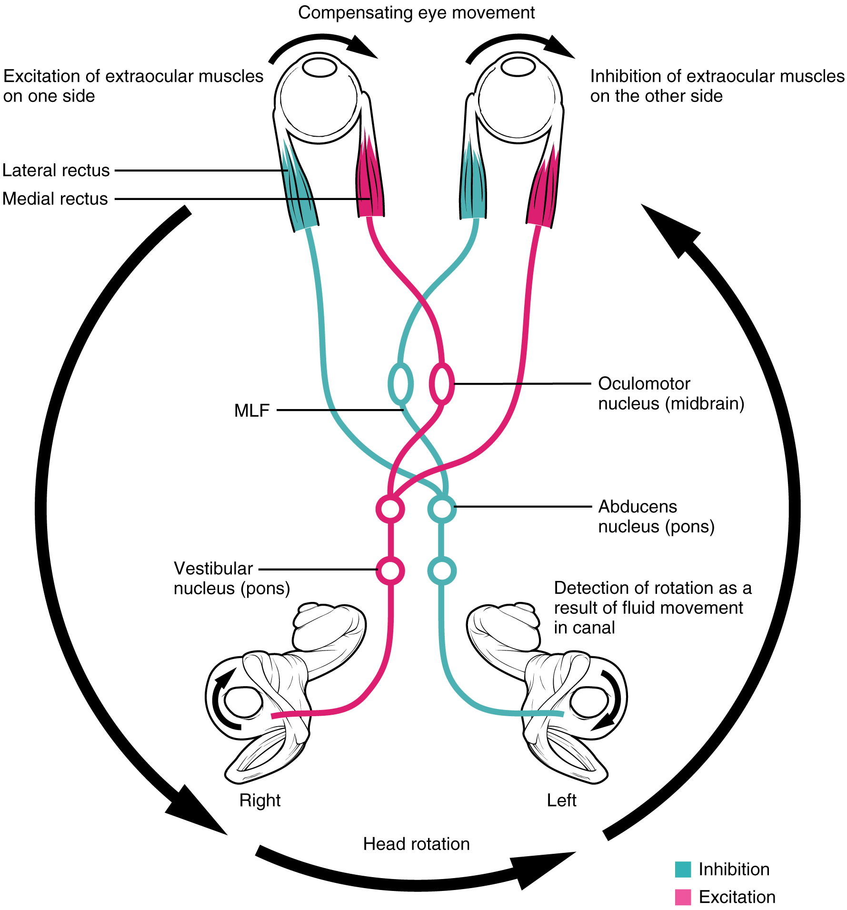
An iconic part of a doctor’s visit is the inspection of the oral cavity and pharynx, suggested by the directive to “open your mouth and say ‘ah.’” This is followed by inspection, with the aid of a tongue depressor, of the back of the mouth, or the opening of the oral cavity into the pharynx known as thefauces. Whereas this portion of a medical exam inspects for signs of infection, such as in tonsillitis, it is also the means to test the functions of the cranial nerves that are associated with the oral cavity.
The facial and glossopharyngeal nerves convey gustatory stimulation to the brain. Testing this is as simple as introducing salty, sour, bitter, or sweet stimuli to either side of the tongue. The patient should respond to the taste stimulus before retracting the tongue into the mouth. Stimuli applied to specific locations on the tongue will dissolve into the saliva and may stimulate taste buds connected to either the left or right of the nerves, masking any lateral deficits. Along with taste, the glossopharyngeal nerve relays general sensations from the pharyngeal walls. These sensations, along with certain taste stimuli, can stimulate the gag reflex. If the examiner moves the tongue depressor to contact the lateral wall of the fauces, this should elicit the gag reflex. Stimulation of either side of the fauces should elicit an equivalent response. The motor response, through contraction of the muscles of the pharynx, is mediated through the vagus nerve. Normally, the vagus nerve is considered autonomic in nature. The vagus nerve directly stimulates the contraction of skeletal muscles in the pharynx and larynx to contribute to the swallowing and speech functions. Further testing of vagus motor function has the patient repeating consonant sounds that require movement of the muscles around the fauces. The patient is asked to say “lah-kah-pah” or a similar set of alternating sounds while the examiner observes the movements of the soft palate and arches between the palate and tongue.
The facial and glossopharyngeal nerves are also responsible for the initiation of salivation. Neurons in the salivary nuclei of the medulla project through these two nerves as preganglionic fibers, and synapse in ganglia located in the head. The parasympathetic fibers of the facial nerve synapse in the pterygopalatine ganglion, which projects to the submandibular gland and sublingual gland. The parasympathetic fibers of the glossopharyngeal nerve synapse in the otic ganglion, which projects to the parotid gland. Salivation in response to food in the oral cavity is based on a visceral reflex arc within the facial or glossopharyngeal nerves. Other stimuli that stimulate salivation are coordinated through the hypothalamus, such as the smell and sight of food.
The hypoglossal nerve is the motor nerve that controls the muscles of the tongue, except for the palatoglossus muscle, which is controlled by the vagus nerve. There are two sets of muscles of the tongue. Theextrinsic muscles of the tongueare connected to other structures, whereas theintrinsic muscles of the tongueare completely contained within the lingual tissues. While examining the oral cavity, movement of the tongue will indicate whether hypoglossal function is impaired. The test for hypoglossal function is the “stick out your tongue” part of the exam. The genioglossus muscle is responsible for protrusion of the tongue. If the hypoglossal nerves on both sides are working properly, then the tongue will stick straight out. If the nerve on one side has a deficit, the tongue will stick out to that side—pointing to the side with damage. Loss of function of the tongue can interfere with speech and swallowing. Additionally, because the location of the hypoglossal nerve and nucleus is near the cardiovascular center, inspiratory and expiratory areas for respiration, and the vagus nuclei that regulate digestive functions, a tongue that protrudes incorrectly can suggest damage in adjacent structures that have nothing to do with controlling the tongue.
Watch this short video to see an examination of the facial nerve using some simple tests. The facial nerve controls the muscles of facial expression. Severe deficits will be obvious in watching someone use those muscles for normal control. One side of the face might not move like the other side. But directed tests, especially for contraction against resistance, require a formal testing of the muscles. The muscles of the upper and lower face need to be tested. The strength test in this video involves the patient squeezing her eyes shut and the examiner trying to pry her eyes open. Why does the examiner ask her to try a second time?
The accessory nerve, also referred to as the spinal accessory nerve, innervates the sternocleidomastoid and trapezius muscles (Figure \(\PageIndex{5}\)). When both the sternocleidomastoids contract, the head flexes forward; individually, they cause rotation to the opposite side. The trapezius can act as an antagonist, causing extension and hyperextension of the neck. These two superficial muscles are important for changing the position of the head. Both muscles also receive input from cervical spinal nerves. Along with the spinal accessory nerve, these nerves contribute to elevating the scapula and clavicle through the trapezius, which is tested by asking the patient to shrug both shoulders, and watching for asymmetry. For the sternocleidomastoid, those spinal nerves are primarily sensory projections, whereas the trapezius also has lateral insertions to the clavicle and scapula, and receives motor input from the spinal cord. Calling the nerve the spinal accessory nerve suggests that it is aiding the spinal nerves. Though that is not precisely how the name originated, it does help make the association between the function of this nerve in controlling these muscles and the role these muscles play in movements of the trunk or shoulders.
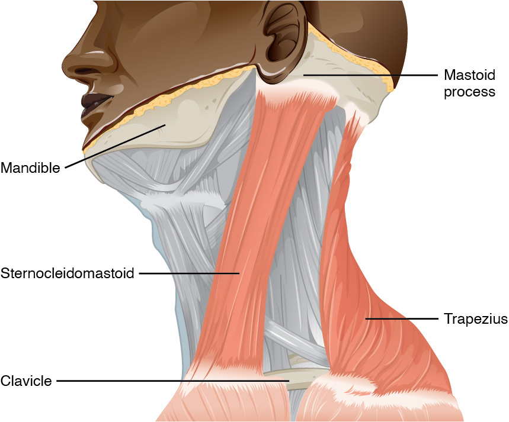
To test these muscles, the patient is asked to flex and extend the neck or shrug the shoulders against resistance, testing the strength of the muscles. Lateral flexion of the neck toward the shoulder tests both at the same time. Any difference on one side versus the other would suggest damage on the weaker side. These strength tests are common for the skeletal muscles controlled by spinal nerves and are a significant component of the motor exam. Deficits associated with the accessory nerve may have an effect on orienting the head, as described with the VOR.
#### The Pupillary Light Response
The autonomic control of pupillary size in response to a bright light involves the sensory input of the optic nerve and the parasympathetic motor output of the oculomotor nerve. When light hits the retina, specialized photosensitive ganglion cells send a signal along the optic nerve to the pretectal nucleus in the superior midbrain. A neuron from this nucleus projects to the Edinger–Westphal nuclei in the oculomotor complex in both sides of the midbrain. Neurons in this nucleus give rise to the preganglionic parasympathetic fibers that project through the oculomotor nerve to the ciliary ganglion in the posterior orbit. The postganglionic parasympathetic fibers from the ganglion project to the iris, where they release acetylcholine onto circular fibers that constrict the pupil to reduce the amount of light hitting the retina. The sympathetic nervous system is responsible for dilating the pupil when light levels are low.
Shining light in one eye will elicit constriction of both pupils. The efferent limb of the pupillary light reflex is bilateral. Light shined in one eye causes a constriction of that pupil, as well as constriction of the contralateral pupil. Shining a penlight in the eye of a patient is a very artificial situation, as both eyes are normally exposed to the same light sources. Testing this reflex can illustrate whether the optic nerve or the oculomotor nerve is damaged. If shining the light in one eye results in no changes in pupillary size but shining light in the opposite eye elicits a normal, bilateral response, the damage is associated with the optic nerve on the nonresponsive side. If light in either eye elicits a response in only one eye, the problem is with the oculomotor system.
If light in the right eye only causes the left pupil to constrict, the direct reflex is lost and the consensual reflex is intact, which means that the right oculomotor nerve (or Edinger–Westphal nucleus) is damaged. Damage to the right oculomotor connections will be evident when light is shined in the left eye. In that case, the direct reflex is intact but the consensual reflex is lost, meaning that the left pupil will constrict while the right does not.
📖 OpenStax Anatomy & Physiology 2e, Section 16.4. openstax.org · CC BY 4.0
- Describe the arrangement of sensory and motor regions in the spinal cord
- Relate damage in the spinal cord to sensory or motor deficits
- Differentiate between upper motor neuron and lower motor neuron diseases
- Describe the clinical indications of common reflexes
Connections between the body and the CNS occur through the spinal cord. The cranial nerves connect the head and neck directly to the brain, but the spinal cord receives sensory input and sends motor commands out to the body through the spinal nerves. Whereas the brain develops into a complex series of nuclei and fiber tracts, the spinal cord remains relatively simple in its configuration (Figure \(\PageIndex{1}\)). From the initial neural tube early in embryonic development, the spinal cord retains a tube-like structure with gray matter surrounding the small central canal and white matter on the surface in three columns. The dorsal, or posterior, horns of the gray matter are mainly devoted to sensory functions whereas the ventral, or anterior, and lateral horns are associated with motor functions. In the white matter, the dorsal column relays sensory information to the brain, and the anterior column is almost exclusively relaying motor commands to the ventral horn motor neurons. The lateral column, however, conveys both sensory and motor information between the spinal cord and brain.
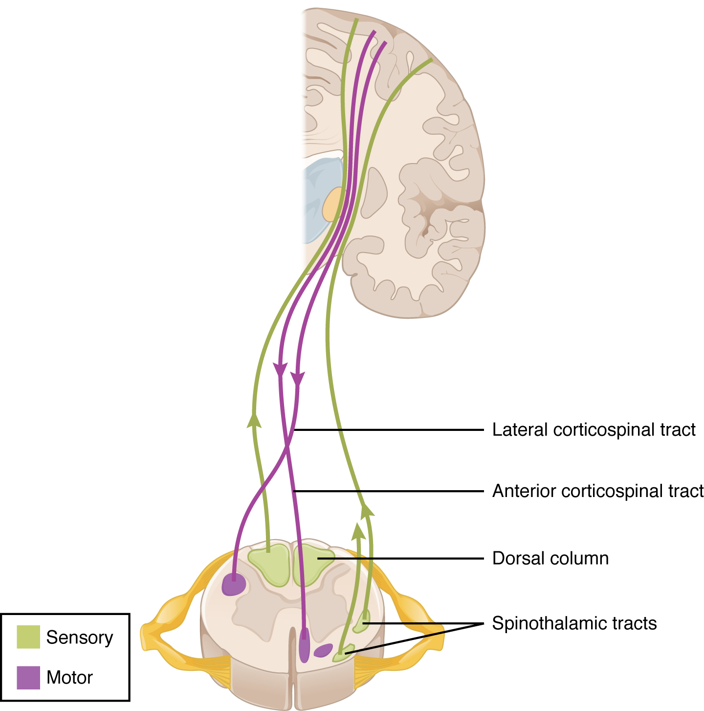
The general senses are distributed throughout the body, relying on nervous tissue incorporated into various organs. Somatic senses are incorporated mostly into the skin, muscles, or tendons, whereas the visceral senses come from nervous tissue incorporated into the majority of organs such as the heart or stomach. The somatic senses are those that usually make up the conscious perception of the how the body interacts with the environment. The visceral senses are most often below the limit of conscious perception because they are involved in homeostatic regulation through the autonomic nervous system.
The sensory exam tests the somatic senses, meaning those that are consciously perceived. Testing of the senses begins with examining the regions known as dermatomes that connect to the cortical region where somatosensation is perceived in the postcentral gyrus. To test the sensory fields, a simple stimulus of the light touch of the soft end of a cotton-tipped applicator is applied at various locations on the skin. The spinal nerves, which contain sensory fibers with dendritic endings in the skin, connect with the skin in a topographically organized manner, illustrated as dermatomes (Figure \(\PageIndex{2}\)). For example, the fibers of eighth cervical nerve innervate the medial surface of the forearm and extend out to the fingers. In addition to testing perception at different positions on the skin, it is necessary to test sensory perception within the dermatome from distal to proximal locations in the appendages, or lateral to medial locations in the trunk. In testing the eighth cervical nerve, the patient would be asked if the touch of the cotton to the fingers or the medial forearm was perceptible, and whether there were any differences in the sensations.
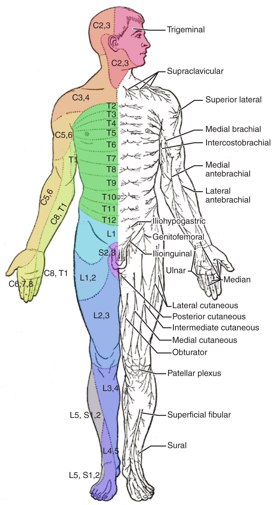
Other modalities of somatosensation can be tested using a few simple tools. The perception of pain can be tested using the broken end of the cotton-tipped applicator. The perception of vibratory stimuli can be testing using an oscillating tuning fork placed against prominent bone features such as the distal head of the ulna on the medial aspect of the elbow. When the tuning fork is still, the metal against the skin can be perceived as a cold stimulus. Using the cotton tip of the applicator, or even just a fingertip, the perception of tactile movement can be assessed as the stimulus is drawn across the skin for approximately 2–3 cm. The patient would be asked in what direction the stimulus is moving. All of these tests are repeated in distal and proximal locations and for different dermatomes to assess the spatial specificity of perception. The sense of position and motion, proprioception, is tested by moving the fingers or toes and asking the patient if they sense the movement. If the distal locations are not perceived, the test is repeated at increasingly proximal joints.
The various stimuli used to test sensory input assess the function of the major ascending tracts of the spinal cord. The dorsal column pathway conveys fine touch, vibration, and proprioceptive information, whereas the spinothalamic pathway primarily conveys pain and temperature. Testing these stimuli provides information about whether these two major ascending pathways are functioning properly. Within the spinal cord, the two systems are segregated. The dorsal column information ascends ipsilateral to the source of the stimulus and decussates in the medulla, whereas the spinothalamic pathway decussates at the level of entry and ascends contralaterally. The differing sensory stimuli are segregated in the spinal cord so that the various subtests for these stimuli can distinguish which ascending pathway may be damaged in certain situations.
Whereas the basic sensory stimuli are assessed in the subtests directed at each submodality of somatosensation, testing the ability to discriminate sensations is important. Pairing the light touch and pain subtests together makes it possible to compare the two submodalities at the same time, and therefore the two major ascending tracts at the same time. Mistaking painful stimuli for light touch, or vice versa, may point to errors in ascending projections, such as in ahemisectionof the spinal cord that might come from a motor vehicle accident.
Another issue of sensory discrimination is not distinguishing between different submodalities, but rather location. The two-point discrimination subtest highlights the density of sensory endings, and therefore receptive fields in the skin. The sensitivity to fine touch, which can give indications of the texture and detailed shape of objects, is highest in the fingertips. To assess the limit of this sensitivity, two-point discrimination is measured by simultaneously touching the skin in two locations, such as could be accomplished with a pair of forceps. Specialized calipers for precisely measuring the distance between points are also available. The patient is asked to indicate whether one or two stimuli are present while keeping their eyes closed. The examiner will switch between using the two points and a single point as the stimulus. Failure to recognize two points may be an indication of a dorsal column pathway deficit.
Similar to two-point discrimination, but assessing laterality of perception, is double simultaneous stimulation. Two stimuli, such as the cotton tips of two applicators, are touched to the same position on both sides of the body. If one side is not perceived, this may indicate damage to the contralateral posterior parietal lobe. Because there is one of each pathway on either side of the spinal cord, they are not likely to interact. If none of the other subtests suggest particular deficits with the pathways, the deficit is likely to be in the cortex where conscious perception is based. The mental status exam contains subtests that assess other functions that are primarily localized to the parietal cortex, such as stereognosis and graphesthesia.
A final subtest of sensory perception that concentrates on the sense of proprioception is known as theRomberg test. The patient is asked to stand straight with feet together. Once the patient has achieved their balance in that position, they are asked to close their eyes. Without visual feedback that the body is in a vertical orientation relative to the surrounding environment, the patient must rely on the proprioceptive stimuli of joint and muscle position, as well as information from the inner ear, to maintain balance. This test can indicate deficits in dorsal column pathway proprioception, as well as problems with proprioceptive projections to the cerebellum through thespinocerebellar tract.
Watch this video to see a quick demonstration of two-point discrimination. Touching a specialized caliper to the surface of the skin will measure the distance between two points that are perceived as distinct stimuli versus a single stimulus. The patient keeps their eyes closed while the examiner switches between using both points of the caliper or just one. The patient then must indicate whether one or two stimuli are in contact with the skin. Why is the distance between the caliper points closer on the fingertips as opposed to the palm of the hand? And what do you think the distance would be on the arm, or the shoulder?
The skeletomotor system is largely based on the simple, two-cell projection from the precentral gyrus of the frontal lobe to the skeletal muscles. The corticospinal tract represents the neurons that send output from the primary motor cortex. These fibers travel through the deep white matter of the cerebrum, then through the midbrain and pons, into the medulla where most of them decussate, and finally through the spinal cord white matter in the lateral (crossed fibers) or anterior (uncrossed fibers) columns. These fibers synapse on motor neurons in the ventral horn. The ventral horn motor neurons then project to skeletal muscle and cause contraction. These two cells are termed the upper motor neuron (UMN) and the lower motor neuron (LMN). Voluntary movements require these two cells to be active.
The motor exam tests the function of these neurons and the muscles they control. First, the muscles are inspected and palpated for signs of structural irregularities. Movement disorders may be the result of changes to the muscle tissue, such as scarring, and these possibilities need to be ruled out before testing function. Along with this inspection, muscle tone is assessed by moving the muscles through a passive range of motion. The arm is moved at the elbow and wrist, and the leg is moved at the knee and ankle. Skeletal muscle should have a resting tension representing a slight contraction of the fibers. The lack of muscle tone, known ashypotonicityorflaccidity, may indicate that the LMN is not conducting action potentials that will keep a basal level of acetylcholine in the neuromuscular junction.
If muscle tone is present, muscle strength is tested by having the patient contract muscles against resistance. The examiner will ask the patient to lift the arm, for example, while the examiner is pushing down on it. This is done for both limbs, including shrugging the shoulders. Lateral differences in strength—being able to push against resistance with the right arm but not the left—would indicate a deficit in one corticospinal tract versus the other. An overall loss of strength, without laterality, could indicate a global problem with the motor system. Diseases that result in UMN lesions include cerebral palsy or MS, or it may be the result of a stroke. A sign of UMN lesion is a negative result in the subtest forpronator drift. The patient is asked to extend both arms in front of the body with the palms facing up. While keeping the eyes closed, if the patient unconsciously allows one or the other arm to slowly relax, toward the pronated position, this could indicate a failure of the motor system to maintain the supinated position.
Reflexes combine the spinal sensory and motor components with a sensory input that directly generates a motor response. The reflexes that are tested in the neurological exam are classified into two groups. Adeep tendon reflexis commonly known as a stretch reflex, and is elicited by a strong tap to a tendon, such as in the knee-jerk reflex. Asuperficial reflexis elicited through gentle stimulation of the skin and causes contraction of the associated muscles.
For the arm, the common reflexes to test are of the biceps, brachioradialis, triceps, and flexors for the digits. For the leg, the knee-jerk reflex of the quadriceps is common, as is the ankle reflex for the gastrocnemius and soleus. The tendon at the insertion for each of these muscles is struck with a rubber mallet. The muscle is quickly stretched, resulting in activation of the muscle spindle that sends a signal into the spinal cord through the dorsal root. The fiber synapses directly on the ventral horn motor neuron that activates the muscle, causing contraction. The reflexes are physiologically useful for stability. If a muscle is stretched, it reflexively contracts to return the muscle to compensate for the change in length. In the context of the neurological exam, reflexes indicate that the LMN is functioning properly.
The most common superficial reflex in the neurological exam is theplantar reflexthat tests for theBabinski signon the basis of the extension or flexion of the toes at the plantar surface of the foot. The plantar reflex is commonly tested in newborn infants to establish the presence of neuromuscular function. To elicit this reflex, an examiner brushes a stimulus, usually the examiner’s fingertip, along the plantar surface of the infant’s foot. An infant would present a positive Babinski sign, meaning the foot dorsiflexes and the toes extend and splay out. As a person learns to walk, the plantar reflex changes to cause curling of the toes and a moderate plantar flexion. If superficial stimulation of the sole of the foot caused extension of the foot, keeping one’s balance would be harder. The descending input of the corticospinal tract modifies the response of the plantar reflex, meaning that a negative Babinski sign is the expected response in testing the reflex. Other superficial reflexes are not commonly tested, though a series of abdominal reflexes can target function in the lower thoracic spinal segments.
Watch this video to see how to test reflexes in the abdomen. Testing reflexes of the trunk is not commonly performed in the neurological exam, but if findings suggest a problem with the thoracic segments of the spinal cord, a series of superficial reflexes of the abdomen can localize function to those segments. If contraction is not observed when the skin lateral to the umbilicus (belly button) is stimulated, what level of the spinal cord may be damaged?
Many of the tests of motor function can indicate differences that will address whether damage to the motor system is in the upper or lower motor neurons. Signs that suggest a UMN lesion include muscle weakness, strong deep tendon reflexes, decreased control of movement or slowness, pronator drift, a positive Babinski sign,spasticity, and theclasp-knife response. Spasticity is an excess contraction in resistance to stretch. It can result inhyperflexia, which is when joints are overly flexed. The clasp-knife response occurs when the patient initially resists movement, but then releases, and the joint will quickly flex like a pocket knife closing.
A lesion on the LMN would result in paralysis, or at least partial loss of voluntary muscle control, which is known asparesis. The paralysis observed in LMN diseases is referred to asflaccid paralysis, referring to a complete or partial loss of muscle tone, in contrast to the loss of control in UMN lesions in which tone is retained and spasticity is exhibited. Other signs of an LMN lesion arefibrillation,fasciculation, and compromised or lost reflexes resulting from the denervation of the muscle fibers.
In certain situations, such as a motorcycle accident, only half of the spinal cord may be damaged in what is known as a hemisection. Forceful trauma to the trunk may cause ribs or vertebrae to fracture, and debris can crush or section through part of the spinal cord. The full section of a spinal cord would result in paraplegia, or loss of voluntary motor control of the lower body, as well as loss of sensations from that point down. A hemisection, however, will leave spinal cord tracts intact on one side. The resulting condition would be hemiplegia on the side of the trauma—one leg would be paralyzed. The sensory results are more complicated.
The ascending tracts in the spinal cord are segregated between the dorsal column and spinothalamic pathways. This means that the sensory deficits will be based on the particular sensory information each pathway conveys. Sensory discrimination between touch and painful stimuli will illustrate the difference in how these pathways divide these functions.
On the paralyzed leg, a patient will acknowledge painful stimuli, but not fine touch or proprioceptive sensations. On the functional leg, the opposite is true. The reason for this is that the dorsal column pathway ascends ipsilateral to the sensation, so it would be damaged the same way as the lateral corticospinal tract. The spinothalamic pathway decussates immediately upon entering the spinal cord and ascends contralateral to the source; it would therefore bypass the hemisection.
The motor system can indicate the loss of input to the ventral horn in the lumbar enlargement where motor neurons to the leg are found, but motor function in the trunk is less clear. The left and right anterior corticospinal tracts are directly adjacent to each other. The likelihood of trauma to the spinal cord resulting in a hemisection that affects one anterior column, but not the other, is very unlikely. Either the axial musculature will not be affected at all, or there will be bilateral losses in the trunk.
Sensory discrimination can pinpoint the level of damage in the spinal cord. Below the hemisection, pain stimuli will be perceived in the damaged side, but not fine touch. The opposite is true on the other side. The pain fibers on the side with motor function cross the midline in the spinal cord and ascend in the contralateral lateral column as far as the hemisection. The dorsal column will be intact ipsilateral to the source on the intact side and reach the brain for conscious perception. The trauma would be at the level just before sensory discrimination returns to normal, helping to pinpoint the trauma. Whereas imaging technology, like magnetic resonance imaging (MRI) or computed tomography (CT) scanning, could localize the injury as well, nothing more complicated than a cotton-tipped applicator can localize the damage. That may be all that is available on the scene when moving the victim requires crucial decisions be made.
📖 OpenStax Anatomy & Physiology 2e, Section 16.5. openstax.org · CC BY 4.0
- Explain the relationship between the location of the cerebellum and its function in movement
- Chart the major divisions of the cerebellum
- List the major connections of the cerebellum
- Describe the relationship of the cerebellum to axial and appendicular musculature
- Explain the prevalent causes of cerebellar ataxia
The role of the cerebellum is a subject of debate. There is an obvious connection to motor function based on the clinical implications of cerebellar damage. There is also strong evidence of the cerebellar role in procedural memory. The two are not incompatible; in fact, procedural memory is motor memory, such as learning to ride a bicycle. Significant work has been performed to describe the connections within the cerebellum that result in learning. A model for this learning is classical conditioning, as shown by the famous dogs from the physiologist Ivan Pavlov’s work. This classical conditioning, which can be related to motor learning, fits with the neural connections of the cerebellum. The cerebellum is 10 percent of the mass of the brain and has varied functions that all point to a role in the motor system.
The cerebellum is located in apposition to the dorsal surface of the brain stem, centered on the pons. The name of the pons is derived from its connection to the cerebellum. The word means “bridge” and refers to the thick bundle of myelinated axons that form a bulge on its ventral surface. Those fibers are axons that project from the gray matter of the pons into the contralateral cerebellar cortex. These fibers make up themiddle cerebellar peduncle (MCP)and are the major physical connection of the cerebellum to the brain stem (Figure \(\PageIndex{1}\)). Two other white matter bundles connect the cerebellum to the other regions of the brain stem. Thesuperior cerebellar peduncle (SCP)is the connection of the cerebellum to the midbrain and forebrain. Theinferior cerebellar peduncle (ICP)is the connection to the medulla.
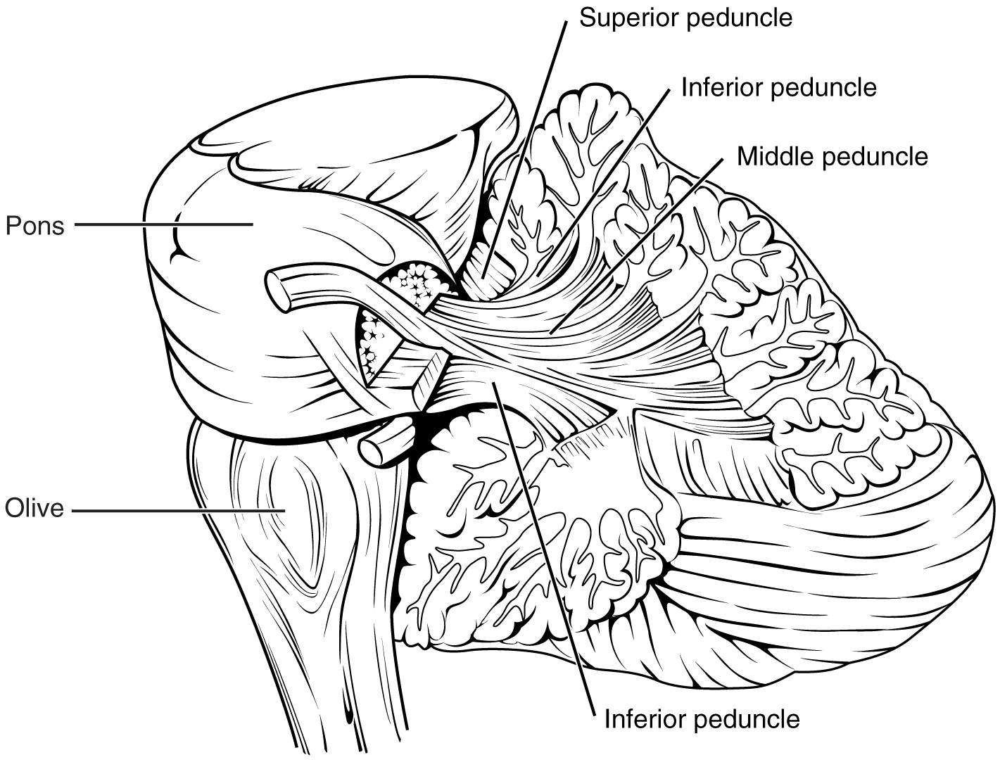
These connections can also be broadly described by their functions. The ICP conveys sensory input to the cerebellum, partially from the spinocerebellar tract, but also through fibers of theinferior olive. The MCP is part of thecortico-ponto-cerebellar pathwaythat connects the cerebral cortex with the cerebellum and preferentially targets the lateral regions of the cerebellum. It includes a copy of the motor commands sent from the precentral gyrus through the corticospinal tract, arising from collateral branches that synapse in the gray matter of the pons, along with input from other regions such as the visual cortex. The SCP is the major output of the cerebellum, divided between thered nucleusin the midbrain and the thalamus, which will return cerebellar processing to the motor cortex. These connections describe a circuit that compares motor commands and sensory feedback to generate a new output. These comparisons make it possible to coordinate movements. If the cerebral cortex sends a motor command to initiate walking, that command is copied by the pons and sent into the cerebellum through the MCP. Sensory feedback in the form of proprioception from the spinal cord, as well as vestibular sensations from the inner ear, enters through the ICP. If you take a step and begin to slip on the floor because it is wet, the output from the cerebellum—through the SCP—can correct for that and keep you balanced and moving. The red nucleus sends new motor commands to the spinal cord through therubrospinal tract.
The cerebellum is divided into regions that are based on the particular functions and connections involved. The midline regions of the cerebellum, thevermisandflocculonodular lobe, are involved in comparing visual information, equilibrium, and proprioceptive feedback to maintain balance and coordinate movements such as walking, orgait, through the descending output of the red nucleus (Figure \(\PageIndex{2}\)). The lateral hemispheres are primarily concerned with planning motor functions through frontal lobe inputs that are returned through the thalamic projections back to the premotor and motor cortices. Processing in the midline regions targets movements of the axial musculature, whereas the lateral regions target movements of the appendicular musculature. The vermis is referred to as thespinocerebellumbecause it primarily receives input from the dorsal columns and spinocerebellar pathways. The flocculonodular lobe is referred to as thevestibulocerebellumbecause of the vestibular projection into that region. Finally, the lateral cerebellum is referred to as thecerebrocerebellum, reflecting the significant input from the cerebral cortex through the cortico-ponto-cerebellar pathway.
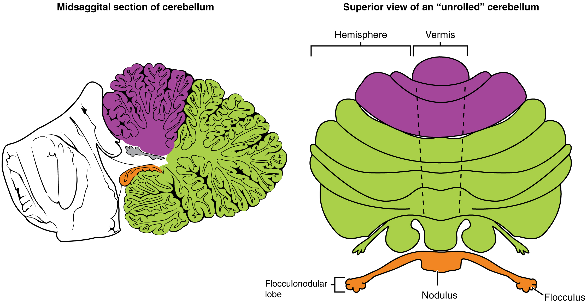
Testing for cerebellar function is the basis of the coordination exam. The subtests target appendicular musculature, controlling the limbs, and axial musculature for posture and gait. The assessment of cerebellar function will depend on the normal functioning of other systems addressed in previous sections of the neurological exam. Motor control from the cerebrum, as well as sensory input from somatic, visual, and vestibular senses, are important to cerebellar function.
The subtests that address appendicular musculature, and therefore the lateral regions of the cerebellum, begin with a check for tremor. The patient extends their arms in front of them and holds the position. The examiner watches for the presence of tremors that would not be present if the muscles are relaxed. By pushing down on the arms in this position, the examiner can check for the rebound response, which is when the arms are automatically brought back to the extended position. The extension of the arms is an ongoing motor process, and the tap or push on the arms presents a change in the proprioceptive feedback. The cerebellum compares the cerebral motor command with the proprioceptive feedback and adjusts the descending input to correct. The red nucleus would send an additional signal to the LMN for the arm to increase contraction momentarily to overcome the change and regain the original position.
Thecheck reflexdepends on cerebellar input to keep increased contraction from continuing after the removal of resistance. The patient flexes the elbow against resistance from the examiner to extend the elbow. When the examiner releases the arm, the patient should be able to stop the increased contraction and keep the arm from moving. A similar response would be seen if you try to pick up a coffee mug that you believe to be full but turns out to be empty. Without checking the contraction, the mug would be thrown from the overexertion of the muscles expecting to lift a heavier object.
Several subtests of the cerebellum assess the ability to alternate movements, or switch between muscle groups that may be antagonistic to each other. In the finger-to-nose test, the patient touches their finger to the examiner’s finger and then to their nose, and then back to the examiner’s finger, and back to the nose. The examiner moves the target finger to assess a range of movements. A similar test for the lower extremities has the patient touch their toe to a moving target, such as the examiner’s finger. Both of these tests involve flexion and extension around a joint—the elbow or the knee and the shoulder or hip—as well as movements of the wrist and ankle. The patient must switch between the opposing muscles, like the biceps and triceps brachii, to move their finger from the target to their nose. Coordinating these movements involves the motor cortex communicating with the cerebellum through the pons and feedback through the thalamus to plan the movements. Visual cortex information is also part of the processing that occurs in the cerebrocerebellum while it is involved in guiding movements of the finger or toe.
Rapid, alternating movements are tested for the upper and lower extremities. The patient is asked to touch each finger to their thumb, or to pat the palm of one hand on the back of the other, and then flip that hand over and alternate back-and-forth. To test similar function in the lower extremities, the patient touches their heel to their shin near the knee and slides it down toward the ankle, and then back again, repetitively. Rapid, alternating movements are part of speech as well. A patient is asked to repeat the nonsense consonants “lah-kah-pah” to alternate movements of the tongue, lips, and palate. All of these rapid alternations require planning from the cerebrocerebellum to coordinate movement commands that control the coordination.
Gait can either be considered a separate part of the neurological exam or a subtest of the coordination exam that addresses walking and balance. Testing posture and gait addresses functions of the spinocerebellum and the vestibulocerebellum because both are part of these activities. A subtest called station begins with the patient standing in a normal position to check for the placement of the feet and balance. The patient is asked to hop on one foot to assess the ability to maintain balance and posture during movement. Though the station subtest appears to be similar to the Romberg test, the difference is that the patient’s eyes are open during station. The Romberg test has the patient stand still with the eyes closed. Any changes in posture would be the result of proprioceptive deficits, and the patient is able to recover when they open their eyes.
Subtests of walking begin with having the patient walk normally for a distance away from the examiner, and then turn and return to the starting position. The examiner watches for abnormal placement of the feet and the movement of the arms relative to the movement. The patient is then asked to walk with a few different variations. Tandem gait is when the patient places the heel of one foot against the toe of the other foot and walks in a straight line in that manner. Walking only on the heels or only on the toes will test additional aspects of balance.
A movement disorder of the cerebellum is referred to asataxia. It presents as a loss of coordination in voluntary movements. Ataxia can also refer to sensory deficits that cause balance problems, primarily in proprioception and equilibrium. When the problem is observed in movement, it is ascribed to cerebellar damage. Sensory and vestibular ataxia would likely also present with problems in gait and station.
Ataxia is often the result of exposure to exogenous substances, focal lesions, or a genetic disorder. Focal lesions include strokes affecting the cerebellar arteries, tumors that may impinge on the cerebellum, trauma to the back of the head and neck, or MS. Alcohol intoxication or drugs such as ketamine cause ataxia, but it is often reversible. Mercury in fish can cause ataxia as well. Hereditary conditions can lead to degeneration of the cerebellum or spinal cord, as well as malformation of the brain, or the abnormal accumulation of copper seen in Wilson’s disease.
Watch this short video to see a test for station. Station refers to the position a person adopts when they are standing still. The examiner would look for issues with balance, which coordinates proprioceptive, vestibular, and visual information in the cerebellum. To test the ability of a subject to maintain balance, asking them to stand or hop on one foot can be more demanding. The examiner may also push the subject to see if they can maintain balance. An abnormal finding in the test of station is if the feet are placed far apart. Why would a wide stance suggest problems with cerebellar function?
#### The Field Sobriety Test
The neurological exam has been described as a clinical tool throughout this chapter. It is also useful in other ways. A variation of the coordination exam is the Field Sobriety Test (FST) used to assess whether drivers are under the influence of alcohol. The cerebellum is crucial for coordinated movements such as keeping balance while walking, or moving appendicular musculature on the basis of proprioceptive feedback. The cerebellum is also very sensitive to ethanol, the particular type of alcohol found in beer, wine, and liquor.
Walking in a straight line involves comparing the motor command from the primary motor cortex to the proprioceptive and vestibular sensory feedback, as well as following the visual guide of the white line on the side of the road. When the cerebellum is compromised by alcohol, the cerebellum cannot coordinate these movements effectively, and maintaining balance becomes difficult.
Another common aspect of the FST is to have the driver extend their arms out wide and touch their fingertip to their nose, usually with their eyes closed. The point of this is to remove the visual feedback for the movement and force the driver to rely just on proprioceptive information about the movement and position of their fingertip relative to their nose. With eyes open, the corrections to the movement of the arm might be so small as to be hard to see, but proprioceptive feedback is not as immediate and broader movements of the arm will probably be needed, particularly if the cerebellum is affected by alcohol.
Reciting the alphabet backwards is not always a component of the FST, but its relationship to neurological function is interesting. There is a cognitive aspect to remembering how the alphabet goes and how to recite it backwards. That is actually a variation of the mental status subtest of repeating the months backwards. However, the cerebellum is important because speech production is a coordinated activity. The speech rapid alternating movement subtest is specifically using the consonant changes of “lah-kah-pah” to assess coordinated movements of the lips, tongue, pharynx, and palate. But the entire alphabet, especially in the nonrehearsed backwards order, pushes this type of coordinated movement quite far. It is related to the reason that speech becomes slurred when a person is intoxicated.
📖 OpenStax Anatomy & Physiology 2e, Section 16.6. openstax.org · CC BY 4.0
| Section | Title |
|---|---|
| 16.2 | 16.2: Overview of the Neurological Exam |
| 16.3 | 16.3: The Mental Status Exam |
| 16.4 | 16.4: The Cranial Nerve Exam |
| 16.5 | 16.5: The Sensory and Motor Exams |
| 16.6 | 16.6: The Coordination and Gait Exams |